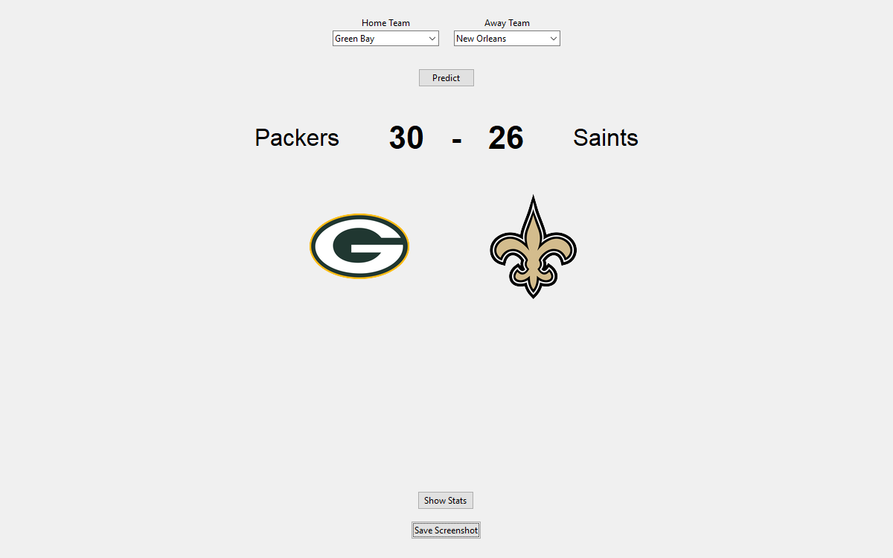
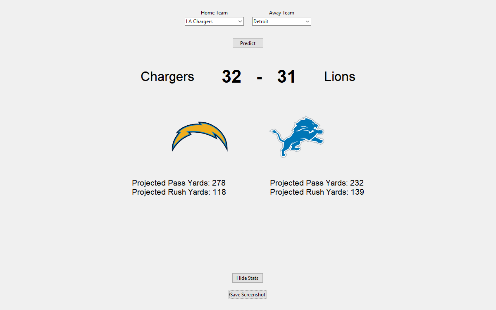
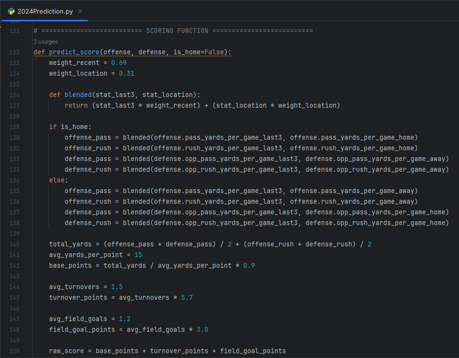

About the NFL Prediction Simulator
This project is a custom-built NFL game prediction tool designed to simulate match outcomes
based on live statistical data. Built with Python, the simulator uses team stats to project
final scores and key offensive metrics like passing and rushing yards.
Core Features:
- Live Stat Collection through automated data scraping
- Dynamic score prediction based on a weighted algorithm
- Projection of passing and rushing yards for both teams
- Team selection dropdowns with official team logos
- Option to display or hide advanced stat projections
- Functionality to save a screenshot of the prediction
Technologies Used:
- Python
- tkinter (GUI Design)
- pandas (Data Management)
- Custom Math Algorithms (Game Predictions)
Example Screenshots:


Sample Code:

Download the Project:
Download NFL Predictor